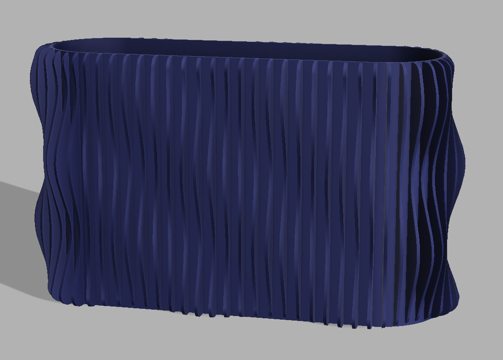
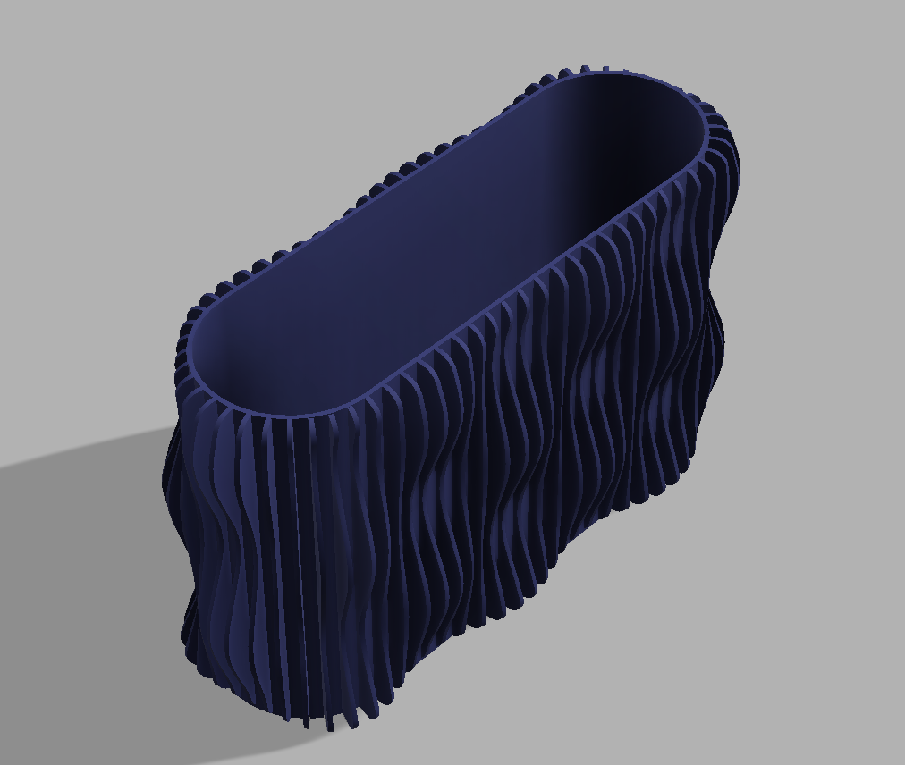
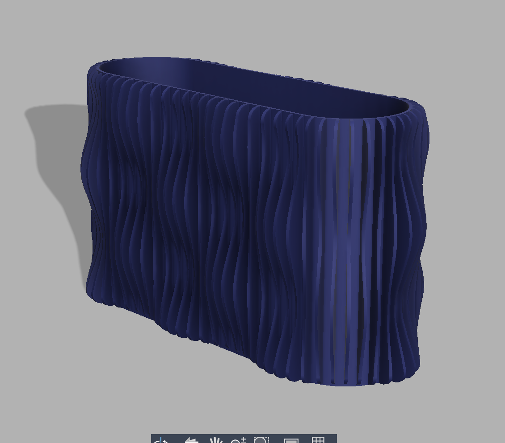
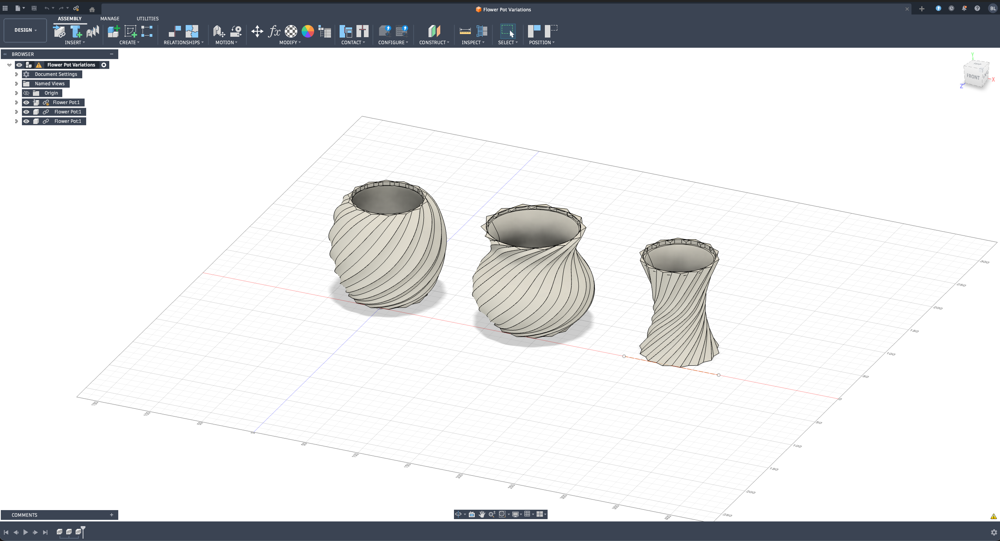

Ongoing work in Fusion 360, building up a vocabulary of 3D modeling through study pieces and personal projects. Each model is an exercise in understanding how form emerges from constraint — how parametric thinking shapes what can be made.
Recent work includes a detailed model of the Iron Man arc reactor and continued practice with parametric design, assemblies, and technical drawing.


The ribbed planter series explores how surface texture can be generated parametrically — vertical sine-wave profiles swept around an oval base, producing forms that read as both machined and organic.
Working across sketches, assemblies, and renders develops a fluency with the software that feeds back into physical making: understanding what can be modeled informs what can be fabricated.
